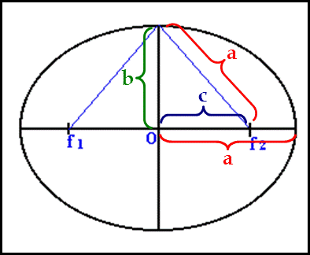

The Ellipse
VideoAn ellipse has two inner foci, a major axis (based on the axis of the longest side of the ellipse), and the minor axis
| major axis parallel to x-axis:${(x-h)^2}/{\html'<span style="color:red;">a</span>'^2}+{(y-k)^2}/{\html'<span style="color:green;">b</span>'^2}=1$ |  |
| major axis parallel to y-axis:${(y-k)^2}/{\html'<span style="color:red;">a</span>'^2}+{(x-h)^2}/{\html'<span style="color:green;">b</span>'^2}=1$ | |
| center=$(h,k)$ a = length of semi-major axis b = length of semi-minor axis |
|
| Pythagorean Theorem $\table a^2=b^2+c^2; c^2=a^2-b^2$ |
| major axis parallel to x-axis: ${(x-h)^2}/{\html'<span style="color:red;">a</span>'^2}+{(y-k)^2}/{\html'<span style="color:green;">b</span>'^2}=1$ |
| major axis parallel to y-axis: ${(y-k)^2}/{\html'<span style="color:red;">a</span>'^2}+{(x-h)^2}/{\html'<span style="color:green;">b</span>'^2}=1$ |
| center=$(h,k)$ a = length of semi-major axis b = length of semi-minor axis |
| Pythagorean Theorem $\table a^2=b^2+c^2; c^2=a^2-b^2$ |
Standard Form of the Equation of an Ellipse: ${(x-h)^2}/{a^2}+{(y-k)^2}/{b^2}=1$
Find the coordinates of the center, foci & vertices of: ${x^2}/{16}+{(y-3)^2}/4=1$
$\table a=±4\text", " b=±2; c^2=a^2-b^2; c=±√{16-4}=±√{12}; c=±2√{3}$
$a=±4\text", " b=±2\text", " c=±2√{3}\text", "h=0 \text", " k=3$
Find the coordinates of the center, foci & vertices of: ${x^2}/{16}+{(y-3)^2}/4=1$
$\table a=±4\text", " b=±2; c^2=a^2-b^2; c=±√{16-4}=±√{12}; c=±2√{3}$
$a=±4\text", " b=±2\text", " c=±2√{3}\text", "h=0 \text", " k=3$
Center
$(h,k)$=$(0,3)$
Vertices
$\table =(h+a,k)=(0+4,3)=(4,3); =(h-a,k)=(0-4,3)=(-4,3); =(h,k+b)=(0,3+2)=(0,5); =(h,k-b)=(0,3-2)=(0,1)$
Foci
$\table =(h±c,k); =(0±2√{3},3)$
$(h,k)$=$(0,3)$
Vertices
$\table =(h+a,k)=(0+4,3)=(4,3); =(h-a,k)=(0-4,3)=(-4,3); =(h,k+b)=(0,3+2)=(0,5); =(h,k-b)=(0,3-2)=(0,1)$
Foci
$\table =(h±c,k); =(0±2√{3},3)$